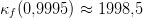
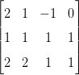

Solução. A matriz completa do sistema é escrita como
 |
Encontramos −z = −1, ou seja, z = 1. Substituindo na segunda equação, temos −y − 3z = −2, ou seja, y = −1 e finalmente x + y + z = 1, resultando em x = 1. ♢
Lembramos que algumas operações feitas nas linhas de um sistema não alteram a solução:
O processo que transforma um sistema em outro com mesma solução, mas que apresenta uma forma triangular é chamado eliminação Gaussiana. A solução do sistema pode ser obtida fazendo substituição regressiva.
Exemplo 4.1.1 (Eliminação Gaussiana sem pivotamento). Resolva o sistema
| x + y + z | = 1 | (4.1) |
| 2x + y − z | = 0 | (4.2) |
| 2x + 2y + z | = 1 | (4.3) |
Solução. A matriz completa do sistema é escrita como
|
|
Encontramos −z = −1, ou seja, z = 1. Substituindo na segunda equação, temos −y − 3z = −2, ou seja, y = −1 e finalmente x + y + z = 1, resultando em x = 1. ♢
A Eliminação Gaussiana com pivotamento parcial consiste em fazer uma permutação de linhas de forma a escolher o maior pivô (em módulo) a cada passo.
Exemplo 4.1.2 (Eliminação Gaussiana com pivotamento parcial). Resolva o sistema
| x + y + z | = 1 | (4.4) |
| 2x + y − z | = 0 | (4.5) |
| 2x + 2z + z | = 1 | (4.6) |
Solução. A matriz completa do sistema é
|  | ∼ | ∼ | (4.7) | |
∼ | ∼ | (4.8) |
Encontramos 1∕2z = 1∕2, ou seja, z = 1. Substituímos na segunda equação e temos y + 2z = 1, ou seja, y = −1 e, finalmente 2x + y − z = 0, resultando em x = 1. ♢
Solução. Construímos a matriz completa:

Exemplo 4.1.4 (Problema com elementos com grande diferença de escala).


Temos


Observe que a expressão obtida para y se aproximada de 2 quando ε é pequeno:


Assim, quando ε é pequeno, a primeira expressão, implementado em um sistema de ponto flutuante de acurácia finita, produz y = 2 e, consequentemente, a expressão para x produz x = 0. Isto é, estamos diante um problema de cancelamento catastrófico.
Agora, quando usamos a Eliminação Gaussiana com pivotamento parcial, fazemos uma permutação de linhas de forma a escolher o maior pivô a cada passo:

Continuando o procedimento, temos:


Observe que tais expressões são analiticamente idênticas às anteriores, no entanto, são mais estáveis numericamente. Quando ε converge a zero, y converge a 2, como no caso anterior. No entanto, mesmo que y = 2, a segunda expressão produz x = 3 − εy, isto é, a aproximação x ≈ 3 não depende mais de obter 2 − y com precisão.
UFRGS - IME - Cálculo Numérico - Um Livro Colaborativo. Contato: livroscolaborativos@gmail.com